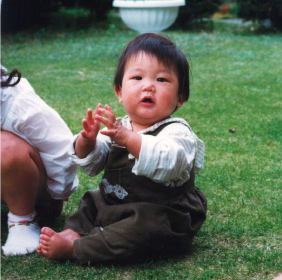
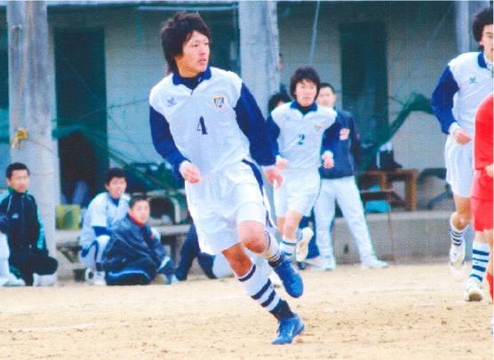

01
01
水谷 隆宏Mizutani Takahiro
アセットプランニング部 営業推進課
-
 1
兵庫県で生まれる
生まれたのは周囲を
山に囲まれた郊外。
実家は今も農業を続ける。 -
6
小学校入学
ボールを見れば
蹴っていた水谷。
サッカーは抜群に
うまかった。県有数の
強豪クラブチームで活躍。 -
12
中学校入学
サッカーの県代表に
選抜され
フランス遠征。
他方、陸上部に誘われて
駅伝メンバーになり
2年連続区間賞獲得。
とにかく目立った。 -
 17
アメリカに留学
いつもヒーロー
だった水谷が
外国人に道を聞かれ
て挫折した。
それをきっかけに
アメリカ留学を決断。 -
18
アメリカの高校を卒業
水谷は留学で多くを学んだ。
「国籍や文化が違っても、
みな同じ人間」
ということもその一つだ。 -
 19
19
結婚、大学進学
アメリカから帰国して半年後、
留学時代のガールフレンドが
一人で訪ねて来た。そして入籍。 -
24
入社
面接で中西社長に出会い「怖さ」を
感じた水谷。“自分をビビらせた人”に
底知れない魅力を感じて入社を決断。 -
 28
28
営業推進課
資産運用型不動産の販売に従事。その後
OB顧客へのアプローチを担うチームを率い、
現在は、営業部全体の業績向上の施策を担当。
F
U
T
U
R
E